Թեստ 28
30:00
1. «Ճանապարհային երթևեկության անվտանգության ապահովման մասին» ՀՀ օրենքի համաձայն` մեխանիկական տրանսպորտային միջոցի վարորդը պարտավոր է իր մոտ ունենալ`
2. Պարտավո՞ր է արդյոք վարել սովորողն ուսումնական վարման ժամանակ ամրակապվել անվտանգության գոտիներով:
3. Տրանսպորտային միջոցների շահագործումն արգելվում է, եթե`
4. Տրանսպորտային միջոցների շահագործումն արգելվում է, եթե՝
5. Պարտավո՞ր է արդյոք սահմանված երթուղով երթևեկող ավտոբուսի վարորդը նշված իրադրությունում զիջել ճանապարհը:
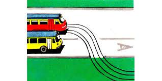
6. Այսպիսի ճանաչման նշանով կահավորվում են այն ավտոմոբիլները, որոնք`
7. Խաչմերուկն առաջինը կանցնի`
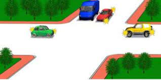
8. Երթևեկությունն արգելվում է`
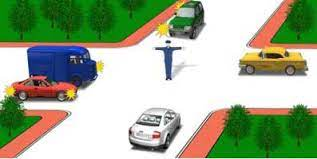
9. Ո՞ր հետագծով է թույլատրված հետադարձը
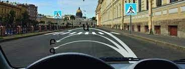
10. Ո՞ր հետագծով կարող եք շարունակել երթևեկությունը
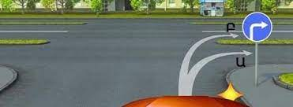
11. Ձախ շրջադարձ կատարելիս
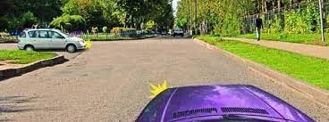
12. Ձախ շրջադարձ կատարելիս պետք է զիջել
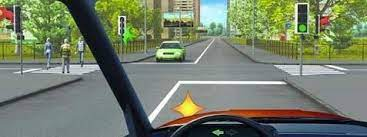
13. Տվյալ ճանապարհային գծանշումը թույլատրում է երթևեկել`
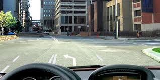
14. Այս նախազգուշացնող նշանը բնակավայրերից դուրս, մինչև վտանգավոր հատվածի սկիզբը ի՞նչ հեռավորության վրա է տեղադրվում:
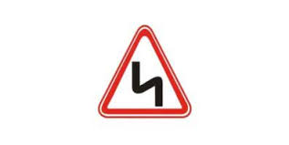
15. Կարմիր գույնի առկայծող փարոսիկ միացրած, կանգնած վիճակում գտնվող տրանսպորտային միջոցին մոտենալիս` տվյալ ուղղությամբ երթևեկող ընդհանուր օգտագործման տրանսպորտային միջոցների վարորդները պետք է`
16. Ո՞ր նկարում են պատկերված երթևեկության թույլատրելի ուղղությունները:
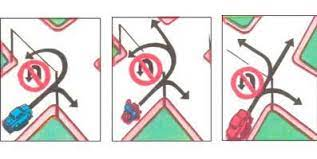
17. Ո՞ր հետագծով է թույլատրվում հետադարձ կատարել
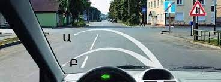
18. Թո՞ւյլատրվում է կանգառ կատարել նշված վայրում
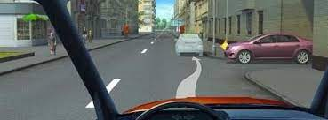
19. Թույլատրվում է արդյո՞ք վազանց կատարել նշված իրավիճակում:
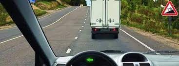